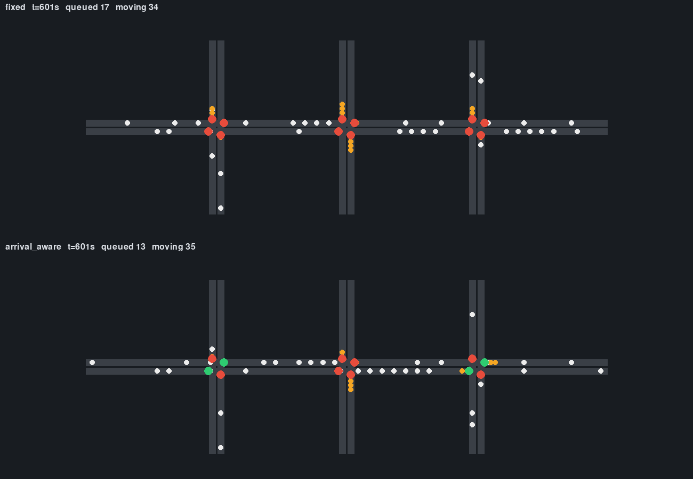
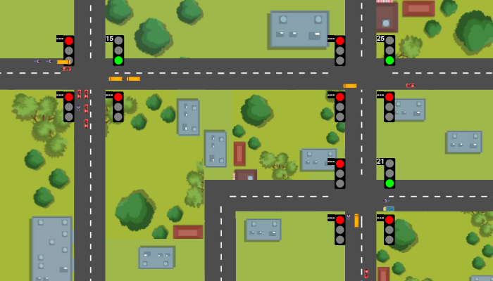
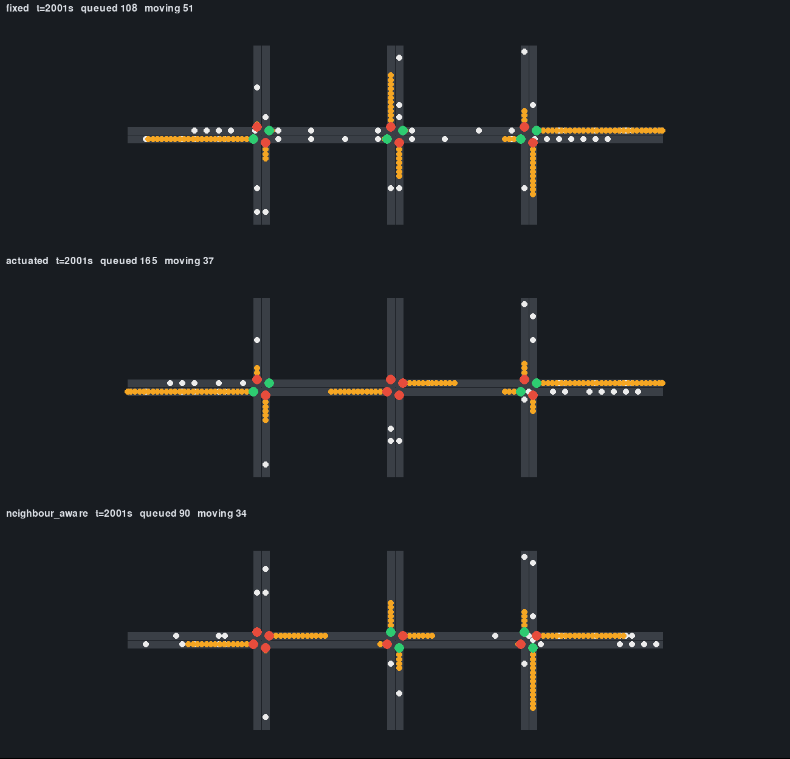
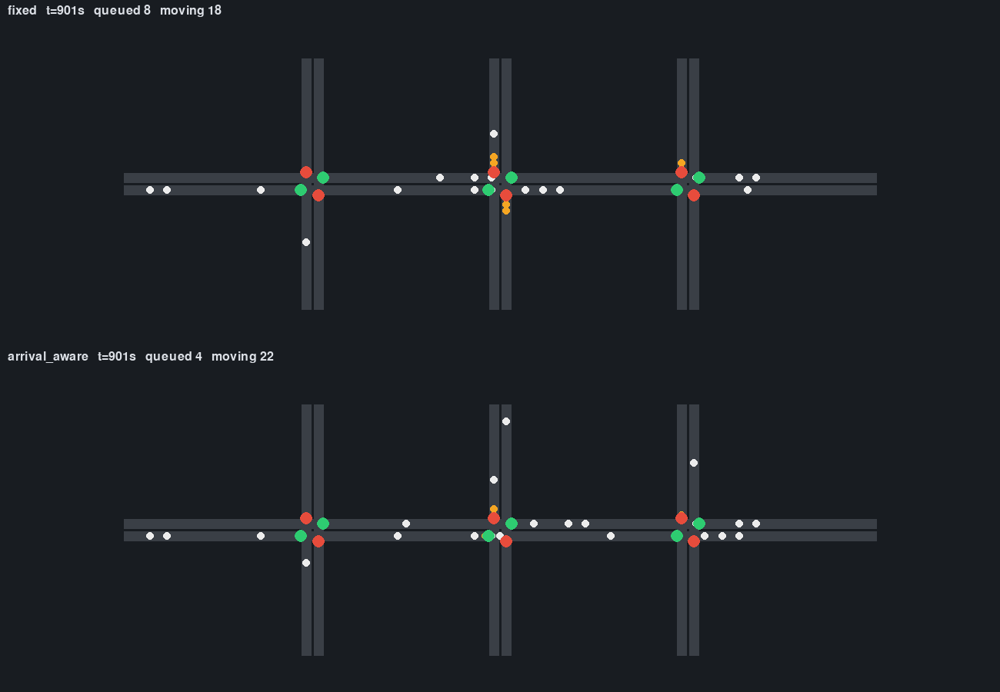
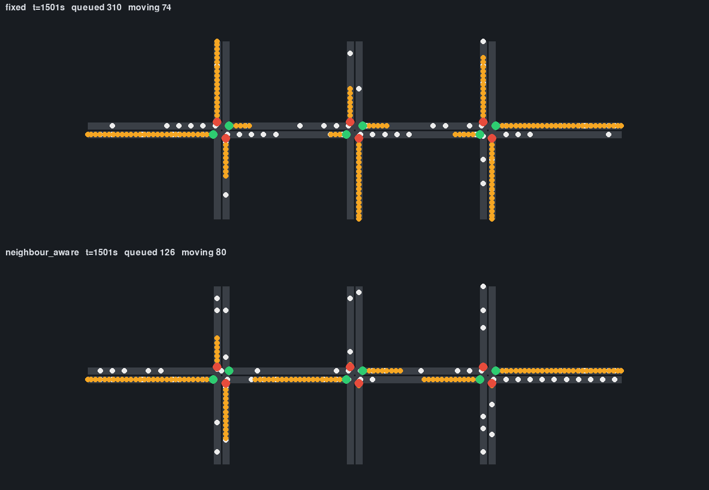

Look-ahead traffic signal control
Traffic lights that look one junction ahead
Most signals run a timetable. Ours watches the cars on their way and adjusts. In a simulator built to be hard to flatter, that cut waiting by about 30% at normal traffic, and it was the only approach still moving when a 2x2 grid was pushed past capacity. We are asking for one junction to test it on, safely.
All traffic here is simulated and all demand is synthetic. That is why the ask is a pilot.
A fixed timer is right on average and wrong most of the time
A junction on a fixed plan gives each road the same green whether it is empty or backed up. Traffic is not steady: it peaks, swings to the other direction and surges. Many junctions in a city also sit a few hundred metres apart, so a platoon released by one arrives at the next a few seconds later, and the next light knows nothing about it.
Our hackathon prototype in 2024 proposed using AI and vehicle counts to set the timings. The demo looked finished, but the parts did not connect and the timing model was trained on five invented data points. So we rebuilt it as an experiment that could actually answer the question: does a signal that reacts to approaching traffic beat a fixed-time one, and by how much?
Count what is coming, then decide
1. See
A roadside camera counts vehicles on the approaches, including those a few seconds from the stop line. Our counter uses a standard YOLO detector, a tracker and line-crossing counts. It is tested on synthetic scenes and still needs a real video.
2. Look ahead
The controller looks about three seconds forward and gives green to the approach that will have vehicles when it opens. It ends a green early if the road beyond is full, and keeps it longer if the next link has room.
3. Stay safe
Minimum and maximum greens and the usual clearance stay in force. We propose running it in shadow mode first, where it only recommends and the existing controller stays in charge.
An honest note on the mechanism. Most of the gain comes from looking ahead and from letting busy greens last long enough. The original hope, using a neighbouring junction's platoon to time the next light, gave no extra gain when we tested it. We report that rather than hide it, because it tells a pilot what to measure.
Where responding to traffic wins
Mean queueing delay per vehicle, neighbour-aware controller against a fixed plan tuned for each demand level, on 30 fresh seeds. Demand is a multiple of the base flow: x1.0 is about 80% of capacity and x2.2 is over capacity. Green means the controller waited less than the fixed plan. Short links and the grid refuse vehicles when an entrance road is full; the remarks say where that changes the reading.
| Demand | Fixed, tuned (s) | Queue-actuated (s) | Arrival-aware (s) | Neighbour-aware (s) |
|---|
The short version. Below saturation, a controller that reacts to traffic cuts queueing delay by about 7 seconds per vehicle (around 30%) against a fixed plan tuned for that demand, on all three layouts. Near capacity the margin shrinks to a few seconds and on the corridor disappears. On short links only the neighbour-aware controller avoids a collapse, and a tuned fixed plan is still better at the highest loads. On the grid only neighbour-aware survives overload.
The comparison that matters more. A real fixed system runs one plan all day. Against one plan chosen for the average demand, the neighbour-aware controller is about 19 to 22 seconds better on the corridor at light and normal demand, 14 seconds at x1.4, and 5 seconds at x1.8.
We also found that the benefit does not come from the idea the project set out to show. It comes mostly from looking about three seconds ahead, which is like an advance detector, and from letting green last long enough on busy phases. Looking further ahead, which is where the neighbouring junction's flow would matter, did not help.
Does it still win against the best possible timer?
Real traffic is not constant. Three demand profiles were run: a peak (light, a ramp to 1.8x for fifteen minutes, then back), a swing (the busy direction trades places) and a surge (a ten-minute burst at 2.4x). The fixed-time system was given its best case: an ideal timetable, where each segment of the hour gets the plan tuned for that segment, and the timer is told exactly when demand changes. Numbers are mean queueing delay in seconds on 30 fresh seeds; the last column is the neighbour-aware controller against that timetable (negative is better, with a 95% interval).
| Layout | Profile | One fixed plan | Ideal timetable | Queue-actuated | Neighbour-aware | Neighbour-aware vs timetable |
|---|---|---|---|---|---|---|
| Corridor | peak | 34.4 | 34.9 | 30.4 | 28.6 | -6.3 ± 0.5 |
| Corridor | swing | 28.3 | 25.6 | 20.1 | 16.8 | -8.7 ± 0.4 |
| Corridor | surge | 55.9 | 53.9 | 46.2 | 42.8 | -11.1 ± 1.4 |
| Short links | peak | 31.2 | 29.9 | 35.5 | 29.4 | -0.6 ± 0.8 (noise) |
| Short links | swing | 24.3 | 21.2 | 20.4 | 17.1 | -4.1 ± 0.3 |
| Short links | surge | 55.0 | 53.2 | 74.3 | 54.4 | +1.2 ± 2.3 (noise) |
| 2x2 grid | peak | 41.4 | 40.8 | 38.9 | 33.9 | -6.9 ± 0.4 |
| 2x2 grid | swing | 30.8 | 27.7 | 24.1 | 20.7 | -6.9 ± 0.2 |
| 2x2 grid | surge | 117.4 | 102.5 | 76.1 | 53.5 | -49.1 ± 42.0 |
What this shows. The gain survives changing demand even against the ideal timetable: 6 to 11 seconds on the corridor, 7 on the grid, and level on short links except when the busy direction swings (4 seconds better). The timetable itself is worth only 0 to 3 seconds over a single well-tuned plan, so retuning a timer through the day recovers little of what sensing traffic gains. On short links, queue-actuated control fails under the peak and surge, so the neighbour rules matter there. The grid surge gap (49 s) is the largest but also the noisiest, because some seeds gridlock the fixed plans.
Fair tests or no result
A simulator can make any controller look good. Most of the work went into stopping that.
A working test bench
Network model
Roads, junctions, phases and turning shares load from a YAML file, with validation that names every problem found. Three layouts ship: a three-junction corridor, a copy with 100 m links, and a 2x2 grid with cycles.
Flow simulation
A one-second-step queue model: vehicles in transit, queues, discharge at saturation flow with start-up loss, and pre-drawn random turns so every controller sees identical traffic for a given seed. Optional spillback adds finite road storage and blocked queues.
Six controllers
Fixed time (including an ideal time-of-day timetable), queue-actuated, a green wave with offsets, an arrival-aware controller that counts vehicles about to arrive, a neighbour-aware one that avoids ending a green while the road it feeds is busy, and a platoon-aware one that was tried and did not help.
Experiment harness
Seeded runs, paired comparisons with 95% confidence intervals, a sweep tool that tunes every controller fairly, and CSV and markdown outputs that the write-up quotes directly.
Replay viewer and video
A pygame window that replays recorded runs and stacks controllers on the same traffic, and a recorder that writes the same view to an MP4, so the difference is visible, not just tabulated.
Changing demand
Demand profiles (a morning peak, a swing of the busy direction, a surge) and a tuning tool that gives the fixed-time system its best case: one plan for the whole hour, and an ideal timetable that is told when demand changes.
Vision to demand
A centroid tracker, a line-crossing counter and a YOLO adapter turn video into arrival rates that feed the simulator. Tested on synthetic scenes; not yet checked against a real video.




Graphs and screenshots from real runs
Every chart below is drawn from the result files in the repository. Every screenshot and every block of terminal output was produced by running the code for this page.
Delay against demand
The short-link collapse
Queue on the west entrance road, sampled every 600 s, short links at 1.8x demand with spillback (seeds 0 to 3). A queue that keeps growing means the entrance cannot keep up.
How the claim shrank
Corridor at 1.8x demand, 30 fresh seeds. Against the plan we first used, the controller looked 38 seconds better. Against a plan tuned for this demand, it is 2 seconds better.
Replay viewer, same traffic, different controllers






Replay video, grid in overload
Terminal output
........................................................................ [ 25%] ........................................................................ [ 50%] ........................................................................ [ 75%] ....................................................................... [100%] 287 passed in 10.09s
network corridor, fixed-time plan fixed_time.yaml, demand x1.0 5 seeds, 3600 s measured after 600 s warm-up metric mean std dev window_steps 3600.00 0.00 vehicles 2080.40 49.18 mean_delay_s 23.50 0.36 stops_per_vehicle 1.28 0.02 mean_queue 13.78 0.50 max_queue 10.20 0.84 throughput_vph 2082.80 45.18 still_in_network 47.40 7.50 worst_entry_delay_s 31.20 0.70 blocked_green_s 0.00 0.00
network corridor; seeds 100-104; 3600 s measured after 600 s warm-up; spillback off demand x1.0 controller delay (s) vs fixed (s) stops/veh mean queue worst stream (s) veh/h out fixed 23.7 +/- 0.1 - 1.29 14.3 29.9 2141 actuated 20.0 +/- 0.4 -3.7 +/- 0.5 1.54 12.0 21.5 2140 green_wave 24.0 +/- 0.4 +0.3 +/- 0.5 (noise) 1.43 14.5 32.3 2142 arrival_aware 17.0 +/- 0.1 -6.7 +/- 0.3 1.37 10.2 22.5 2143 neighbour_aware 17.1 +/- 0.3 -6.6 +/- 0.4 1.35 10.3 23.1 2143 demand x1.8 controller delay (s) vs fixed (s) stops/veh mean queue worst stream (s) veh/h out fixed 80.3 +/- 9.9 - 1.66 85.6 201.8 3741 actuated 43.9 +/- 1.4 -36.3 +/- 10.8 1.62 46.9 55.7 3786 green_wave 76.9 +/- 9.4 -3.4 +/- 0.9 1.74 81.9 195.7 3742 arrival_aware 43.7 +/- 2.0 -36.5 +/- 10.3 1.67 46.7 53.7 3774 neighbour_aware 43.9 +/- 1.6 -36.3 +/- 10.5 1.57 46.9 59.0 3779
demand x1.0, seeds 0-3; best fixed-time green splits by mean delay
EW green NS green cycle delay (s) stops/veh
40 12 62 23.5 +/- 0.4 1.28
35 10 55 24.2 +/- 1.0 1.34
35 12 57 24.3 +/- 1.0 1.36
40 10 60 24.7 +/- 0.8 1.25
40 15 65 25.0 +/- 0.6 1.31
current plan in fixed_time.yaml (EW 40, NS 12): 23.5 s, rank 1 of 42Demand-profile study. Plans tuned on seeds 1800-1803, judged on seeds 1900-1929. Score = mean delay (s), each refused entry charged 600 s. 'vs one plan' and 'vs time of day' are paired differences with a 95% interval; negative means better than that fixed baseline. ## corridor ### profile: peak | controller | setting | score (s) | refused/h | worst stream (s) | vs one plan | vs time of day | |---|---|---|---|---|---|---| | fixed (config plan) | | 41.3 | 0 | 79.3 | +6.9 +/- 1.3 | +6.5 +/- 1.1 | | fixed (one plan) | EW 60 / NS 20 | 34.4 | 0 | 47.7 | - | -0.4 +/- 0.4 (noise) | | fixed (time of day) | 0s: 30/8; 1200s: 40/12; 1800s: 60/20; 2700s: 40/12; 3300s: 30/8 | 34.9 | 0 | 55.6 | +0.4 +/- 0.4 (noise) | - | | actuated | shipped settings | 30.4 | 0 | 38.9 | -4.0 +/- 0.5 | -4.4 +/- 0.6 | | arrival_aware | shipped settings | 28.9 | 0 | 38.0 | -5.5 +/- 0.5 | -6.0 +/- 0.5 | | neighbour_aware | shipped settings | 28.6 | 0 | 39.7 | -5.9 +/- 0.5 | -6.3 +/- 0.5 | | platoon_aware | shipped settings | 31.2 | 0 | 49.0 | -3.2 +/- 0.6 | -3.6 +/- 0.6 | ### profile: swing | controller | setting | score (s) | refused/h | worst stream (s) | vs one plan | vs time of day | |---|---|---|---|---|---|---| | fixed (config plan) | | 28.3 | 0 | 44.1 | +0.0 +/- 0.0 (noise) | +2.7 +/- 0.7 | ...
Max-green rule check for neighbour_aware, seeds 2000-2011. Score = mean delay (s), each refused entry charged 600 s. 'rule - best' is the paired difference between the rule's value and the best value found on the same seeds (0 = the rule chose the best; positive = the rule is worse). | layout | fitted? | demand | rule value | best value | score at rule | score at best | rule - best | |---|---|---|---|---|---|---|---| | corridor | yes | x1.0 | 150 | 120 | 16.5 | 16.5 | +0.0 +/- 0.0 (noise) | | corridor | yes | x1.8 | 150 | 60 | 43.7 | 41.5 | +2.2 +/- 0.9 | | corridor | yes | x2.2 | 150 | 200 | 109.8 | 107.2 | +2.5 +/- 3.0 (noise) | | short_links_limited | yes | x1.0 | 150 | 90 | 16.9 | 16.9 | +0.0 +/- 0.1 (noise) | | short_links_limited | yes | x1.8 | 150 | 60 | 49.8 | 45.9 | +3.9 +/- 3.8 | | short_links_limited | yes | x2.2 | 150 | 90 | 155.8 | 129.4 | +26.4 +/- 7.5 | | grid_2x2_limited | yes | x1.0 | 30 | 45 | 20.4 | 20.3 | +0.1 +/- 0.3 (noise) | | grid_2x2_limited | yes | x1.8 | 30 | 30 | 47.4 | 47.4 | 0 (rule is best) | | grid_2x2_limited | yes | x2.2 | 30 | 20 | 163.9 | 146.6 | +17.4 +/- 22.7 (noise) | | corridor_200m_limited | no (held out) | x1.0 | 150 | 60 | 16.7 | 16.6 | +0.1 +/- 0.3 (noise) | | corridor_200m_limited | no (held out) | x1.8 | 150 | 60 | 43.0 | 41.5 | +1.6 +/- 1.4 | | corridor_200m_limited | no (held out) | x2.2 | 150 | 120 | 101.0 | 97.2 | +3.7 +/- 5.0 (noise) | | grid_2x2_long_limited | no (held out) | x1.0 | 60 | 45 | 20.7 | 20.7 | +0.1 +/- 0.1 (noise) | | grid_2x2_long_limited | no (held out) | x1.8 | 60 | 30 | 53.1 | 48.3 | +4.8 +/- 0.6 | | grid_2x2_long_limited | no (held out) | x2.2 | 60 | 30 | 101.8 | 100.9 | +0.9 +/- 1.9 (noise) | Scores by max green (columns in the order of the config): ...
corridor_short_links, demand x1.8, spillback on, entrance W_J1 -> link J1_J2 fixed overlap 1.00 served 1079 of 1080 veh/h W_J1 queue every 600 s: [13, 28, 20, 24, 34] actuated overlap 0.50 served 1048 of 1080 veh/h W_J1 queue every 600 s: [15, 41, 47, 38, 58] neighbour_aware overlap 0.61 served 1102 of 1080 veh/h W_J1 queue every 600 s: [2, 10, 11, 8, 10]
The video counting step (scripts/count_video.py) needs a real video and YOLO weights, so it is not run here.
Claims we caught and withdrew
The most useful part of this project was catching results that looked good and were not. Each of these changed the write-up.
The first controller collapsed near capacity
The arrival-aware controller beat the baseline at light load and had nearly three times the baseline's delay at 1.8x demand. We added a fallback to plain queue-actuated behaviour when a junction is congested, and it removed the collapse with no cost at light load.
Our explanation for the short-link collapse was wrong
We assumed the controllers held green for blocked approaches. Measuring blocked green showed it was only 2 to 9% of green. The real cause was that the controllers let neighbouring junctions drift out of step, which filled the short link between them. The fixed plan keeps junctions in step, so it never had the problem. We rewrote the diagnosis.
Our high-demand gains came from a weak comparison
The fixed plan had been tuned only at normal demand, and the responsive controllers were capped at a provisional 50 second maximum green that we had never swept. A fixed plan tuned for 1.8x demand matched them. We retuned everything fairly, rewrote the headline numbers, and put a correction note at the top of the results document.
"Beats fixed by 21 seconds" became "9 seconds worse"
We first reported the neighbour-aware controller beating the fixed plan on short links. That was against the plan tuned for normal demand. Against a plan tuned for the same demand it loses by 9 seconds. The collapse fix is real, but it does not make the responsive controller better than a well-set timer in that setting.
The 2x2 grid broke our default
We set the maximum green to 110 seconds from the corridor and short-link results. On a grid of short links in a cycle, long greens fill the road ahead and the cycle locks up, and the best value was 30 seconds. We tried two universal rules; one helped the grid and badly hurt short links, so we dropped it. The final model uses a per-layout setting and the write-up says it needs its own sweep for any new layout.
A win at 2.2x demand on the corridor was a search edge
The first fair re-tune reported the responsive controllers 16 to 18 seconds better than a tuned fixed plan at 2.2x demand. The fixed plan's best setting sat at the edge of the grid we searched. Widening the grid (green up to 180 s) let the fixed plan reach 113.5 seconds, and the difference became 0.7 seconds, within noise. We withdrew the claim and put a correction note at the top of the results document.
Looking for a platoon did not help either
The original question was whether a platoon heading for a junction should change its timing. We built a controller that keeps a green open while a platoon of four or more vehicles is within eight seconds, and tuned it. Switching the rule off changed results by half a second or less on short links and the grid, and on the corridor it was 5 to 6 seconds worse near saturation, because holding the main road starves the side streets. That is the third version of the idea that gave nothing (a longer look-ahead and a link-fullness cue were the others), so the honest answer to the original question is: not by anything we tried. The code stays, marked as a negative result.
A rule for the maximum green: usable, but our reasoning was wrong
We replaced the per-layout hand sweep with a rule from the layout's shape, and tested it on two layouts it had never seen. It was within noise at light and overload demand and at worst 4.8 seconds off (about 10%) at 1.8x. But we had assumed the best green would grow with link length, and both grids did best at 30 seconds regardless. We did not adjust the rule to fit those test layouts, because then they would no longer be a test; it needs a third layout.
The controller's name overstates its mechanism
The neighbour-aware controller is meant to read the neighbouring junction's state. Any fullness threshold from 1% to 15% gave identical results, so what helps is allowing longer greens on the through road. We left the name and documented what the data shows.
Limits
- Synthetic demand. Arrivals are random. Rates now rise, swing and surge, but the shapes are invented, not measured, and turning patterns are fixed.
- An assumed penalty. Vehicles refused entry are charged 600 seconds each in scoring. That figure is our assumption, and rankings in the overload rows on short links depend on it.
- Simple junctions. Two phases, one lane, no left-turn phases or pedestrians, and a fixed start-up loss.
- Optimistic sensing. The responsive controllers see every vehicle on incoming roads. Real detectors cover less, and video tracking has errors of its own.
- Five layouts. Three were used to tune and two only to test a rule. Results do not transfer automatically to a different network, and the best maximum green changed by a factor of five between layouts.
- Over capacity. At the highest loads on the short-link and grid layouts, every plan gridlocks or nearly so. Those rows describe a collapsed network, not a working plan.
- Video counting. The counting code is tested on synthetic scenes only. It needs a real video, a hand count and an agreed tolerance before it can be called verified.
These are written up in full in the repository next to the results, because a reader deciding how far to trust the numbers needs them.
One junction, one camera, no risk to traffic
The simulation says the idea is worth testing. It cannot say how it behaves on a real road. We would like a pilot site and the permission to count traffic there. The plan is staged so that nothing can make the junction worse until the numbers justify it.
What we need: a site, permission to film or count from a fixed point, the junction's current signal plan, and a contact on the traffic-engineering side to tell us what we have wrongly assumed. We do not need control of the signal for stages 1 to 3.
The team
- kl mithunvel
- Viji Bala
- Madhumitha V
- Aishwaria Kowta
- Manvi Chadha
Smart India Hackathon 2024 team. We built the original prototype together. kl mithunvel rebuilt it as the simulation study on this page (simulator, controllers, experiments, viewer and write-up), using Claude Code, an AI coding assistant; the commit history records that.